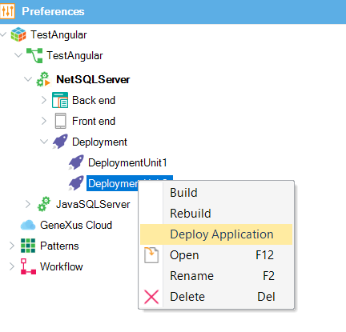
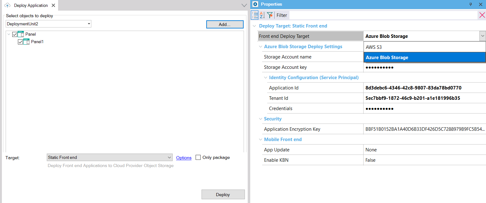

To deploy your front end application to a Cloud provider storage, you can use the Application Deployment tool from inside the GeneXus IDE, or MSBuild commands.
Summary:
In GeneXus, after having created the Deployment Unit object containing the main objects of your app, go through the "Deploy Application" contextual menu option,

and select the "Static Front end" option from the Targets combo box.
Next, from the Properties dialog, select a Front-end Deployment target (AWS S3, or Azure Blob Storage).
Depending on the target selected, you have to enter different options.
Finally, press the deployment button.

If you wish, you can just create the deploy package by checking "Only Package". In this case, you will have the package under the Deploy\STATICFRONTEND\<DeploymentUnit> directory of the KB.
The Application Deployment tool is based on MSBuild tasks. Using those tasks, you can automate deployment.
In the case of front-end applications, three MSBuild scripts are executed to perform the deployment.
GeneXus provides a script called deploy.msbuild (located at the root of the GeneXus installation) which is used to create a deployment project for front-end applications, when the Target deployment (TargetId) is "STATICFRONTEND".
This step creates a file called <ProjectName>.gxdproj (an MSBuild script) which contains a list of the selected objects of the Deployment Unit object, and some environment properties for the deployment. This gxdproj file is used as input of the MSBuild task that deploys to the cloud.
Properties to add to the MSBuild execution:
C:\Windows\Microsoft.NET\Framework\v4.0.30319\MSBuild.exe /noconsolelogger /nologo /logger:DeployLogger,"C:\Development\Trunk\Genexus\GeneXus.Deploy.MSBuild.Tasks.dll" /verbosity:quiet /ToolsVersion:4.0 "C:\Development\Trunk\Genexus\deploy.msbuild" /p:TargetId ="STATICFRONTEND" /p:DEPLOY_TARGETS="C:\Development\Trunk\Genexus\DeploymentTargets\StaticFrontEnd\staticfrontend.targets" /p:KBPath="C:\models\TestAngular\TestAngular" /p:KBEnvironment="NetSQLServer1" /p:KBVersion="TestAngular" /p:DeploymentUnit="DeploymentUnit2" /p:ProjectName="myproject" /p:ObjectNames="SDPanel:Panel1" /t:CreateDeploy
The build of the project is triggered by the CreateFrontendPackage.msbuild script, which receives the parameters explained below.
C:\Windows\Microsoft.NET\Framework\v4.0.30319\MSBuild.exe /noconsolelogger /nologo /logger:DeployLogger,"C:\Development\Trunk\Genexus\GeneXus.Deploy.MSBuild.Tasks.dll" /verbosity:minimal /ToolsVersion:4.0 "C:\Development\Trunk\Genexus\CreateFrontendPackage.msbuild" /p:GXDeployFileProject="C:\models\TestAngular\TestAngular\NetSQLServer005\web\DeploymentUnit1_20220614182207.gxdproj" /p:ProjectRootDirectory="C:\models\TestAngular\TestAngular\NetSQLServer005\mobile\Angular" /p:GenExtensionName="Angular" /p:DeploymentScript="deploy.angular.msbuild" /p:GX_PROGRAM_DIR="C:\Development\Deploy\Genexus" /t:CreatePackage
Note: In the case of Angular, the DeploymentScript is "deploy.angular.msbuild" and is declared at the angular.generator file. The deploy.angular.msbuild is located at GenExtensions\SmartDevices\Angular\deploy under the GeneXus installation.
The solution to deploy the front end of an application is extensible and available at Github (StaticFrontEnd deployment target). Those files are in your GeneXus installation, under the DeploymentTarget folder.
There's a built-in solution for deploying to AWS S3 and to Azure Blob Storage.
In this step, the application is built and everything is set up for distribution.
It has a deploy.msbuild script which includes the .target file depending on the STATICFRONTEND_PROVIDER property value (it can be "aws3" or "azureblobstorage"). Depending on the Provider, different properties are needed in order to deploy to that cloud.
For details on how to execute this step, see Deploy Front-end applications to Azure Blob Storage.
At the moment, only one main object must be deployed to each Storage.
Since GeneXus 17 Upgrade 9
Consider that in most cases you have to configure the CORS. See the following for more details:
How to: Angular front end applications using serverless backend